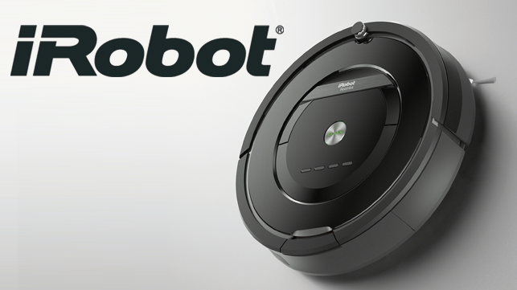

Pros & Cons
Artificial Intelligence has proven itself to be very useful in almost any field. It can be used in almost all the tasks that we do in our daily lives. It has been used in simple tasks in our daily lives like cleaning our room to difficult tasks such as Space Exploration. It has also made the jobs that humans find difficult much easier. We probably have also noticed it being used in large scale industries which is reducing the amount of man power required to do specific jobs. All these examples makes AI look as if it only has advantages but is that the reality? The same AI that is making our lives much easier and simpler has numerous disadvantages as well. While AI solves our problems quicker and in a more efficient way, we humans are at a great disadvantage as well. AI takes away the creativity from humans and makes them lazy. Not only that, if mechanical robots integrated with AI is used in all the jobs requiring man power, then the job opportunities will also drop which leads to joblessesness. So, is AI really a boon or a curse?
Advantages
After more than five decades of working on AI, Humans have found numerous ways where it can help us. AI is programmed to learn itself, so that itself is a great advantage. Programmers do not have to code AI to do specific tasks. AI is being used widely in most of the fields in the current world. It is used in our phones as Virtual Personal Assistants (Siri, Cortana, Google Now, etc.), It is being used in environments which can be dangerous to humans (Space Exploration, Mining, etc.) and It is also used in huge factories to do the work that humans find difficult. It can do alomst all the tasks which humans struggle to do in a much easier and a much simpler way.
Working on Extreme Conditions
There are numerous jobs that possess a very high risk to humans.Working on extreme conditions such as mining in deep mines, exploring the outer space, working on industries with harmful chemicals, etc., has been made a lot easier as AI does not have to fear the dangers that humans have to fear such as lack of oxygen, getting hurt by the harmful chemicals, etc. It is a great advantage which can make difficult tasks much easier and much faster. We probably have heard about the recent space mission where a AI based rover was used to gather information of the planet Mars. It would have been a much mroe difficult task if humans were used instead of AI. Hence, AI can prove to be very useful for working in extreme conditions.
Virtual Personal Assistants

Almost all of us have a smartphone these days and most smartphones have a special feature called Virtual Personal Assistans or simply Siri in Apple Devices, Cortana in Windows, etc. The most recent one is M developed by Facebook. It is one of the feature that utilizes AI. They have been making our smartphone or our smart devices experience much better and easier. We can ask it anything and it answers to us accordingly. It is one of the gifts of AI that has the potential to change our lives in a much larger scale. Using them in our smart devices is just an example. Using it to make our home a smart home such as Turning lights and music on with a simple voice command and these are just the minor examples.
Games and Entertainment
Computer chess has been around since the 1950s. They work on the basis of, you guessed it, AI. The moves that the computer use are based on our moves in other words, the computer learns from our moves, analyzes it and then it moves the best possible chess piece. Its algorithm shows characters such as self-learning, analysis and adaptibility. No wonder it is almost impossible to defeat the computer. Likewise, it is also used in First person Shooter(FPS) games and other similar AI based games such as Call of Duty, DOTA 2, etc. When we choose to play with the computer in the game, we are actually playing with the AI of the game. They are used in most modern games.
Home Appliances
We have been using modern home appliances in our daily lives. AI is also being integrated into the devices that we use regularly. Home appliances such as a vaccum cleaner, fridge, washing machine, etc. have AI integrated into them. In simple words, we can turn them on and they can do the work without us having to do anything manually. For example, The irobot Roomba is a smart vaccum cleaner which does not require users to do anything other than to turn it on. It detects the dust particles with its onboard sensors and does the work accordingly. Other appliances also work in a similar manner. All possible because of AI.
Some Other Advantages
2. Chatbots
3. Security AI which can lock all doors when suspicious activities are detected
4. And many more...
Disadvantages
Artificial Intelligence is one of the greatest innovations and it has alot of advantages. But if we think about it, there are alot disadvantages as well. It has so many advantages that people are completely disregarding the dangers and the disadvantages of AI. The fact that it has major disadvantages makes us wonder if AI should really be given continuity and so much importance. Many people believe that AI can be the end of human race but that is just the worst case scenario. There are several other disadvantages which can be proven detrimental to the whole human race. As we know that the possibilities are infinite but not all possibilities are good.

Job Opportunities
AI is starting to replace humans in large industries and factories. Mechanical arms and robots integrated with AI can do all the things that a human can do in a much faster pace and without applying much effort. This is a great advantage for industries and factories but people will eventually lose thier jobs as robots replace them. Soon robots will replace all the humans and take away thier jobs which give rise to a major problem of joblessness. People will lose job opportunities. Industries will prefer robots over humans as they are faster, more efficient as well and they do not complain as well.
Laziness and Lack of Creativity

AI can solve any kind of problem in an instant but the fact that humans take a lot of time to solve a problem is what makes humans creative but AI solves all the problems in no time and does not give humans time to even analyze the problem. Solving problems in no time sure is a good thing but what we fail to realize is that it is taking taking away our creativity and our ability to solve problems. Not only that, humans will get lazier as they will get more dependent on AI. AI will make humans dull. The same AI that is making our tasks easier is making us lazier and taking away our creativity.
Technological Singularity
Artificial General Intelligence is belived to be amongst us in the next few shundred years. People have estimated that it will be more intelligent than all the humans combined. It will probably change the world but along with that comes Technological Singularity. It is a hypothetical event where humans will not be able to comprehend to the superintelligence of AI. AI will continually redesign itself with recursive self-improvement. Humans will not be the most intelligent being anymore. The main reason behind this is that recursive sel-improvement is limitless. AI will keep on redesigning and improving itself to a point where humans cannot even imagine.
Threat to Mankind

Artificial Intelligence can be dangerous. The self learning algorithm of AI cannot be controlled so easily. This mean that sooner or later AI will learn to disobey humans. And no we are not talking about Siri taking over the world. If we think about it in a large scale, this could be a threat to humanity. There are military AI being developed. If military AI goes out of control, then the threats are of a great level. People who have realized the dangers are already against the idea of development of AI. If proper precautions are not taken then it will possibly lead to the extinction of the human race.
Some More Facts
2. Movies such as The Terminator, I Robot, etc. gives us a hint of the worst case scenario of AI.